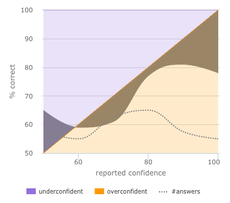

the bad news
You are a terrible guesser.
I'm also a terrible guesser. As are most people, with the exception of some well-trained meteorologists and professional gamblers.
'Guessing' here refers to a properly calibrated probability estimate. If you were to guess the gross domestic earnings of The Goonies, your answer would probably be wrong, not through personal faults, but because the question tests exact domain knowledge. Rephrasing the question as:
“What are your high and low estimates for the gross domestic earnings of the The Goonies? What interval estimate of confidence would you give this range?”
The answer might be:
“Between $100,000 to $100,000,000, inclusive, with 90% confidence.”[note]
Given enough data points in a sufficiently ideal world, the estimated confidence interval would match the observed accuracy. In other words, the range estimates given with 90% confidence should – on average and with minimal variance – be correct 90% of the time. This changes the exercise from a measurement of trivia knowledge to a measurement of ability to gauge uncertainty. However, much fewer than 90% of answers with 90% confidence will contain the actual value because humans habitually display overconfident estimates. What we know is about 10-35 percentage points less than what we think we know in this example.
cognitive bugs
Plenty of empirical research explores the limits and prejudices of probability estimates, and a few present theories on the potential causes, most of which can be found among other lists of cognitive biases.
- Anchoring: the wording and structure of the questions can decrease epistemic accuracy by up to 53 percentage points.
- Pattern-seeking habits of humans create the illusion of signal where there is only noisy data 12..
- Prospect theory: small probabilities are overweighed, especially when attached to high-consequence events 100-101..
- Our educational training emphasizes algebra and calculus as the end goals, not probability and statistics.
- We ignore prior probabilities.
- Many social and professional systems reward overconfidence.
- In situations determined primarily by chance, we often build narratives[note] to coherently explain the events, giving the illusion of control. E.g., market fluctuations due to labor reports, portfolio performance due to investment strategies or combat effectiveness predicted by training exercises[note].
These biases are to estimation as optical illusions are to psychometrics, where a simple change of the problem context causes a predictable change in the perceived reality. In general, humans have a very troubled relationship with uncertainty. We don't understand it instinctually, we don't communicate it well and we're willing to pay Part I, Chapter II. 100-101. to avoid it.
you should care
Even if you don't live in a region with legalized gambling or work in a forecasting profession, everyday failures of estimation hurt your quality of life, whether due to inaccurate project estimates, poor investments or being late to the next appointment. We make decisions based on uncertainty and imperfect knowledge, knowing much less than we think we know. As far as ubiquitous problems of human existence, it's right up there with communicable disease[note].
More importantly, inability to accurately estimate closes the door to powerful tools of probabilistic thinking. With accurate prior probabilities, Bayesian prediction[note] avoids the nuances of frequentist statistics, while allowing your mental model to adapt as the facts change. It's something which the Army and Air Force train, and M.D.s understand through years of experience. Along with the distance-rate-time equation, time-value equation and logical equalities, Bayes' Theorem is one of the those unreasonably effective structures of math, which internalizing will vastly improve your thinking.
mensa mea bona est
Overconfidence follows a predictable pattern. It is usual for difficult assessments (although slightly less for true/false tests p64.). In some cases, very easy questions inspire underconfidence. Two simple calibration techniques can help to correct this:
- Consider the reasons why your judgment might be wrong p228..
- Range estimates can reduce the anchoring effect of a point estimate, particularly by working towards a narrow range from an absurdly large range p64-5..
Things that don't fix overconfidence:
- More information. Paradoxically, providing more information to the problem increases one's confidence in the answer, but not accuracy.
Most importantly, feedback and iterative practice allow us to improve our estimation techniques, which is the purpose of this project. Select the number of questions you want and the quiz will give you instant feedback on your progress.

The more questions have been answered, the more reliable the results will be.
When choosing your confidence level, 50% confidence indicates that you have no idea which answer is correct. 100% indicates absolute certainty of the correct answer. The more questions you answer, the more accurate your calibration will be.
20 questions
40 questions
70 questions
100 questions
other examples
If you want to try other types of calibrated probability assessments:
sources
Gill, C. J.
"Why Clinicians Are Natural Bayesians." BMJ 330, no. 7499 (May 7, 2005): 1080-1083. doi:10.1136/bmj.330.7499.1080.
Gunzelmann, G., and K.A. Gluck.
"Knowledge Tracing for Complex Training Applications: Beyond Bayesian Mastery Estimates." In
Proceedings of the Thirteenth Conference on Behavior Representation in Modeling and Simulation, 383-384. Orlando, FL: Simulation Interoperability Standards Organization, 2004.
Jeffery, Richard.
Subjective Probability: The Real Thing. Cambridge University Press, 2002.
Kahneman, Daniel.
"Don't Blink! The Hazards of Confidence." The New York Times, October 19, 2011, sec. Magazine.
Kassin, Saul M., and Christina T. Fong.
"'I'm Innocent!': Effects of Training on Judgments of Truth and Deception in the Interrogation Room." Law and Human Behavior 23, no. 5 (October 1, 1999): 499-516. doi:10.1023/A:1022330011811.
Knight, Frank H. (Frank Hyneman).
Risk, Uncertainty and Profit. Boston, New York, Houghton Mifflin Company, 1921.
Lichtenstein, Sarah, and Baruch Fischhoff.
Training for Calibration, November 1978.
Lichtenstein, Sarah, Baruch Fischhoff, and Lawrence D. Phillips.
"Calibration of Probabilities: The State of the Art to 1980." In
Judgment Under Uncertainty: Heuristics and Biases, edited by Daniel Kahneman, Paul Slovic, and Amos Tversky, 306-334. Cambridge, UK: Cambridge University Press, 1982.
Lindley, D. V., A. Tversky, and R. V. Brown.
"On the Reconciliation of Probability Assessments." Journal of the Royal Statistical Society. Series A (General) 142, no. 2 (January 1, 1979): 146-180. doi:10.2307/2345078.
Marx, Vivien.
"Data Visualization: Ambiguity as a Fellow Traveler." Nature Methods 10, no. 7 (July 2013): 613-615. doi:10.1038/nmeth.2530.
McIntyre, M.E.
"On Thinking Probabilistically." In
Extreme Events (Proc. 15th 'Aha Huliko'a Workshop), 153-161. U. of Hawaii: SOEST, 2007.
Oskamp, Stuart.
"Overconfidence in Case-study Judgments." Journal of Consulting Psychology 29, no. 3 (1965): 261-265. doi:10.1037/h0022125.
Radzevick, Joseph R., and Don A. Moore.
"Competing to Be Certain (but Wrong): Social Pressure and Overprecision in Judgment." Academy of Management Proceedings 2009, no. 1 (August 1, 2009): 1-6. doi:10.5465/AMBPP.2009.44246308.
|